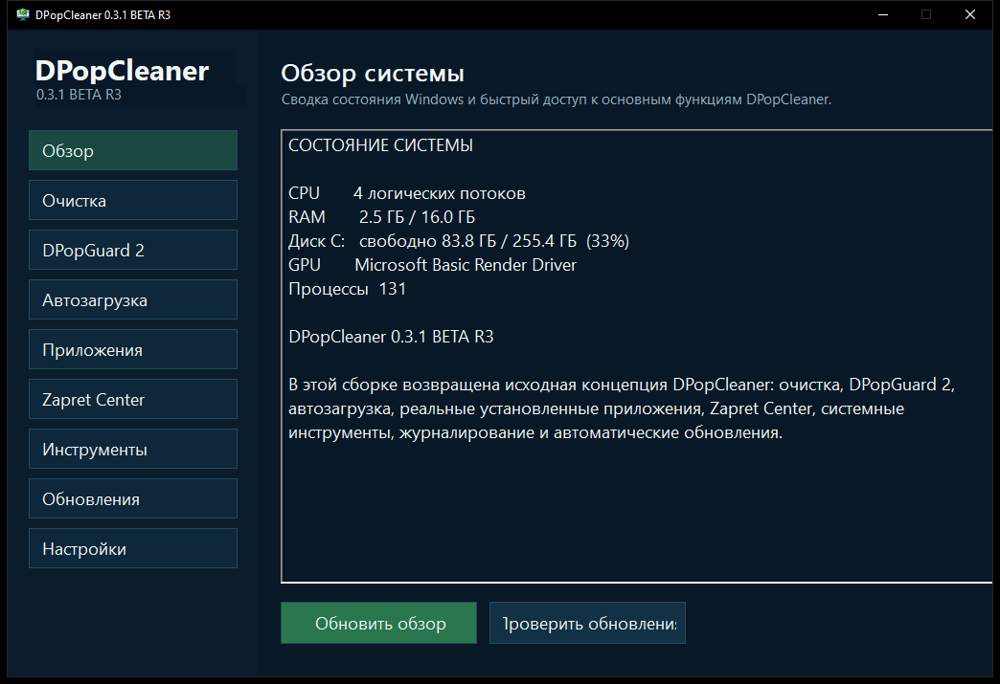

Очистка системы
Поиск временных данных и ненужных файлов с понятным сценарием очистки.
CleanerОчистка, диагностика, управление автозагрузкой, DPopGuard 2, нативная проверка обновлений и официальный Zapret 1.10.1 — в одном приложении.

DPopCleaner 0.3.1 BETA R3 проходит сборку и проверки. Пока доступен последний проверенный установщик 0.2.14 CLEAN R1.
Возможности
DPopCleaner объединяет инструменты, которые обычно приходится искать по разным разделам системы и отдельным утилитам.
Поиск временных данных и ненужных файлов с понятным сценарием очистки.
CleanerОбзор CPU, RAM, дисков, GPU и доступных процессов для поиска проблемных мест.
System analysisБыстрая эвристическая проверка автозапуска. В текущей BETA подозрительные записи только показываются — автоматического удаления нет.
Quick scanРеальный список установленных программ из Windows. Запускает штатный деинсталлятор, затем ищет оставшиеся папки, данные и ярлыки и предлагает убрать их в Корзину.
Uninstall + leftoversПросмотр записей автозапуска текущего пользователя из реестра Windows.
Startup ManagerБыстрый доступ к диагностике, обслуживанию и проверке системных компонентов.
Windows toolsПолный официальный набор Flowseal: стратегии, service.bat, WinDivert и проверка обновлений. Запуск и установка службы — только вручную.
Verified bundleWinHTTP, HTTPS, размер и SHA-256. Фоновая проверка только сообщает о версии — установку запускает пользователь.
Safe updaterКак это работает
DPopCleaner собирает доступные сведения о состоянии системы и показывает, где требуется внимание.
Вы выбираете нужные действия: очистка, автозагрузка, системные инструменты или быстрая проверка.
Выполняйте только выбранные действия и возвращайтесь к журналам, если нужно проверить результат.
О текущей сборке
Полный установщик R3 содержит DPopCleaner, DPopUpdater и закреплённый официальный Zapret 1.10.1. Архив Zapret и лицензия проверяются по SHA-256 при сборке. Приложение запрашивает права администратора при запуске, но не устанавливает службу Zapret автоматически.
будет опубликован после сборкиFAQ
Короткие ответы на вопросы, которые особенно важны для BETA-версии.
Текущий установщик собран под 64-битную Windows. Для сайта мы позиционируем релиз для Windows 10 и Windows 11 x64.
R3 работает с системной диагностикой, автозагрузкой и внешними инструментами, которым нужны повышенные права. Запрос UAC встроен в manifest DPopCleaner; updater сам остаётся обычным процессом.
Нет. Это дополнительная эвристическая проверка процессов и автозапуска. Она ничего не удаляет автоматически и не заменяет Microsoft Defender или другой антивирус.
Нет. Установщик не ставит службу Zapret, а DPopUpdater не перезапускает приложение после обновления. Стратегия и менеджер службы открываются только по кнопке в Zapret Center.
Вычислите SHA-256 файла и сравните его со значением на этой странице. Для текущего BETA-релиза ожидаемый хеш загружается из update/beta.json и отображается выше.
DPopCleaner 0.3.1 BETA R3
Сейчас доступна 0.2.14 CLEAN R1 · 2.11 МБ